하나우 전투 (1) - 녹아내리는 그랑다르메
게시: 2026-05-25T06:30:24+09:00
라이프치히에서 후퇴하던 나폴레옹에겐 길고 긴 후퇴길이 기다리고 있었습니다. 라인연방 거의 전체 병력을 모아서 치룬 결전이었던 라이프이치 전투에서 큰 피해를 입으며 패배했고, 이미 바이에른, 작센, 부르템부르크 등의 주요 동맹들이 모두 연합군 쪽으로 넘어가버렸으니, 독일 지역에서는 더 이상 버틸 수가 없다는 것이 분명했습니다. 그렇기에 나폴레옹에게 남은 것은 오직 하나, 프랑스와 독일의 자연 국경인 라인강을 넘어 프랑스로 돌아가는 것이었습니다. 나폴레옹은 라인강을 방벽으로 삼아 연합군의 프랑스 침공을 대비하면서, 빨리 파리로 돌아가 다시 한 번 징집령을 내리고 새로운 군대를 편성할 생각이었습니다.
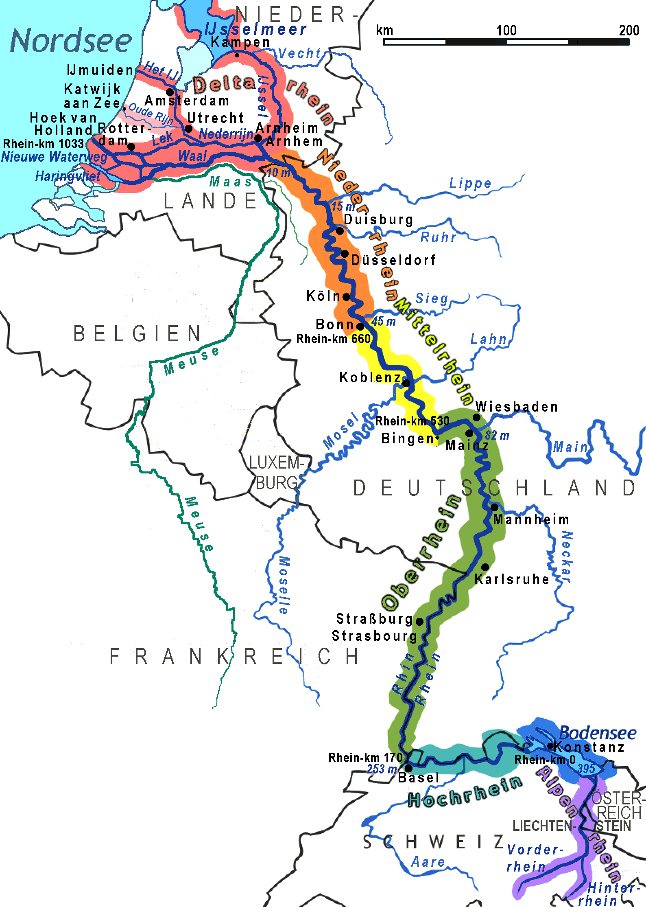
(라인강입니다. 우리는 어릴 때부터 WW2 패전 이후 서독의 경제 부흥에 대해 '라인강의 기적'이라는 말을 듣고 자라서, 라인강이 독일 한 가운데를 흐르는 강이라고 생각합니다만, 사실 라인강은 독일 서쪽에 흐르는 변경의 강입니다. 서독의 수도였던 본(Bonn)이 라인강에 접하고 있기 때문에 '라인강의 기적'이라는 표현이 나온 것이지요.)
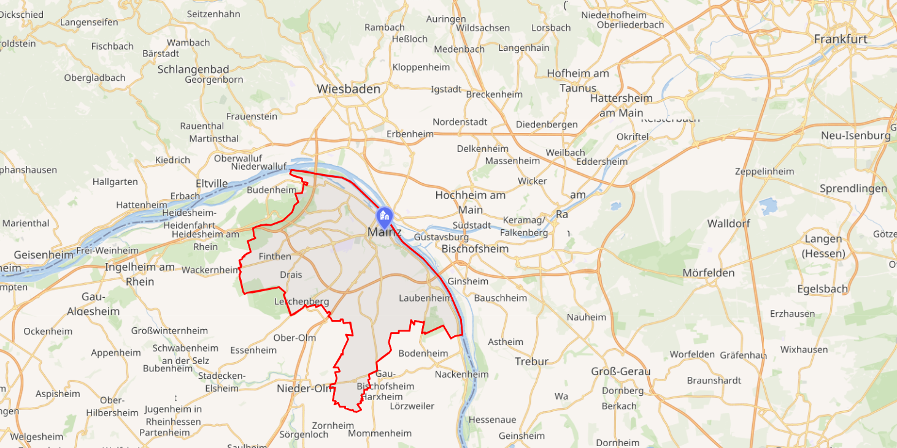
(그런데 실은 라인강이 프랑스와 독일 사이의 자연 국경(Frontières naturelles de la France))이라는 개념은 루이13세 때부터 시작되어 프랑스 혁명 당시에 확고해진 것에 불과합니다. 가령 라인강 서안에 있는 도시들인 스트라스부르(Strasbourg)나 쾰른(Köln, 프랑스어나 영어로는 Cologne), 본(Bonn), 그리고 위 지도에 표시된 마인츠(Mainz) 등은 모두 주민 대부분이 독일어를 쓰는 독일계 도시들입니다. 리셜리외나 마자랭 등은 프랑스의 국방을 위해 라인강을 자연 경계로 삼고자 했는데, 그걸 실력으로 구현한 것은 1792년 발미(Valmy) 전투에서 승리한 혁명군이 후퇴하는 프로이센군을 라인강까지 추격한 것에서 시작되었고, 1797년 캄포 포르미오 조약에서 나포레옹이 마인츠를 프랑스 영토로 공식 편입하면서 완성됩니다.)
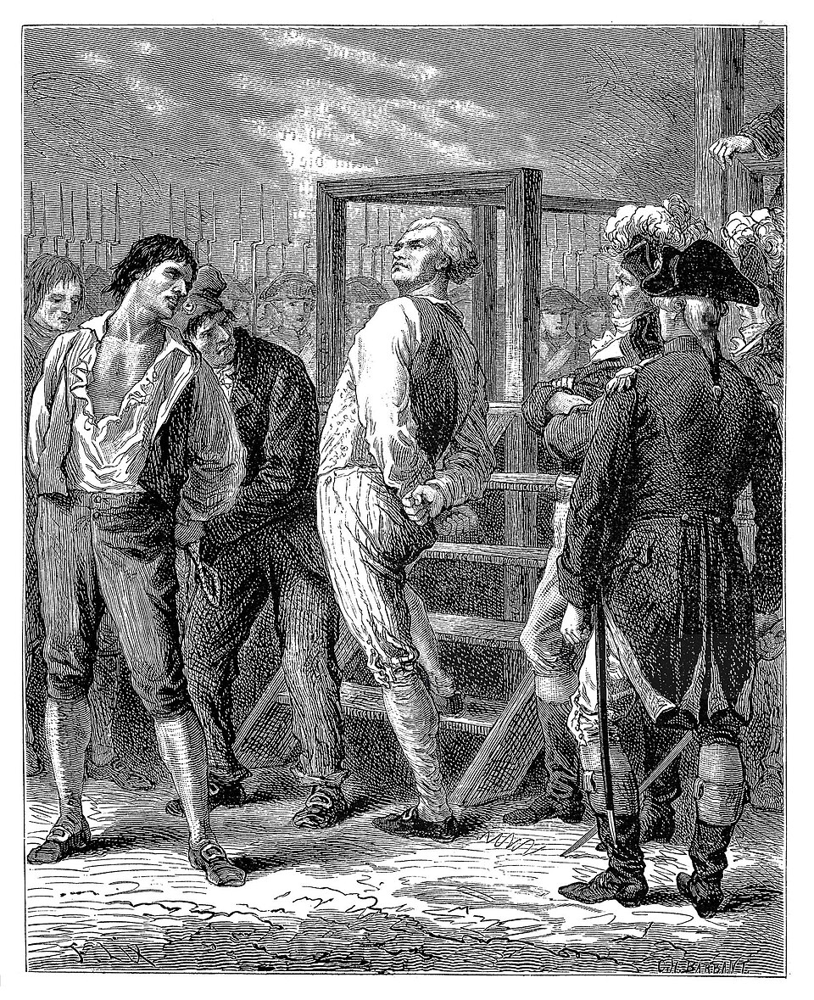
(모든 혁명은 그 혁명을 주변으로 퍼뜨리기 위해 폭력을 사용하며 팽창주의 성격을 띠는 경우가 많은데, 프랑스 대혁명도 마찬가지였습니다. 프랑스 대혁명 초기 지도자 중 하나였던 당통(Georges Danton)도 1793년 '프랑스의 국경은 자연에 의해 정해지는데, 그 경계는 라인강, 바다, 피레네 산맥, 알프스 산맥이다'이라고 선언했습니다. 프랑스 혁명군을 이끌고 마인츠를 처음으로 점령했던 퀴스틴 백작(Adam Philippe, Comte de Custine)도 '라인강을 국경으로 가지지 못하는 공화국은 망하기 딱 좋다'라고 그를 지지했습니다. 그러나 윗 그림 속의 당통도, 퀴스틴 백작도 모두 로베스피에르의 공포 정치 때 기요틴의 이슬로 사라졌습니다.) 라이프치히에서 파리로 가는 최단경로를 그어 보면 나폴레옹이 라인강을 건널 곳은 대략 코블렌츠(Koblenz) 아니면 마인츠(Mainz) 둘 중 하나였습니다. 이건 나폴레옹에게나 연합군에게나 명백했습니다. 따라서 나폴레옹은 걸음아 날 살려라 하며 최대한 빨리 그 방향으로 도주했고, 연합군은 그 뒤를 바싹 추격했습니다. 라이프치히는 독일에서도 동쪽으로 꽤 깊숙히 위치한 곳으로서, 라인강까지는 거의 400km 정도 떨어진 곳이었습니다. 그렇게 먼 길이었으므로 라인강으로 가는 구체적인 경로는 선택에 따라 조금씩 다를 수 있었습니다. 베르나도트가 덴마크로 몰고 간 북부 방면군을 제외하고도 아직 20만이 넘는 대군이었던 연합군으로서는 교통 정체와 식량 징발의 문제 때문에라도 어차피 하나의 추격로에 대군을 몰아 넣을 수도 없었으므로, 몇 개의 방향으로 군을 갈라 추격에 나섰고, 그 상황을 보고 받은 나폴레옹은 그 때문에라도 나움부르크(Naumburg) 등의 다른 경로는 포기하고 최단경로를 택했습니다.
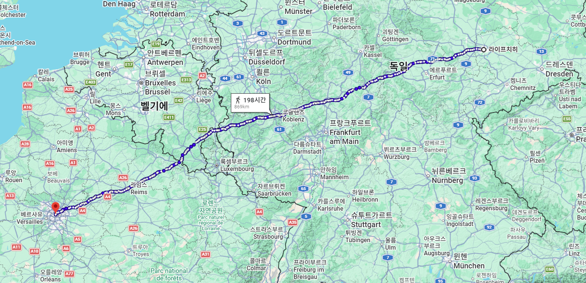
(라이프치히에서 파리로 가는 최단 거리입니다. 코블렌츠를 거치게 되어 있습니다.)
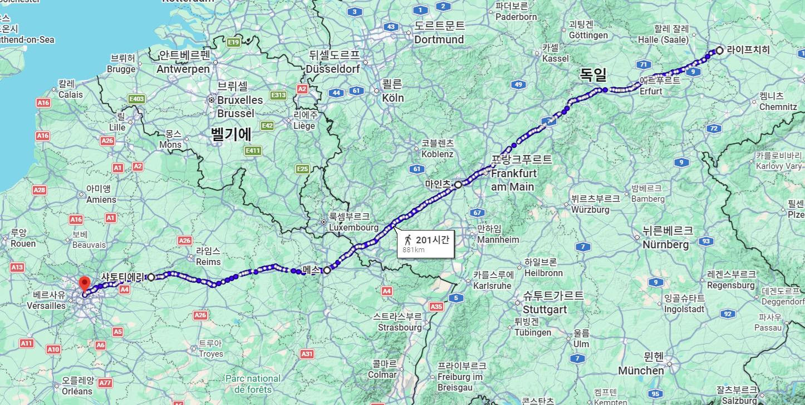
(이 그림은 라이프치히에서 마인츠를 거쳐 파리로 가는 경로입니다. 마인츠를 거치는 경로의 거리가 코블렌츠를 거치는 것보다 약 30km, 그러니까 하루 행군 거리 정도 더 길긴 합니다. 그러나 도로 상태와 지형은 마인츠로 가는 것이 더 쉬웠습니다.) 이렇다보니 나폴레옹은 전군을 이끌고 단일 경로를 통해 라인강을 향하는 모양새가 되어 버렸습니다. 이건 적어도 공격시에는 정상적인 부대 기동의 모습이 아니었습니다. 위에서 설명한 것처럼 극심한 교통 체증 및 식량 현지 징발의 문제 때문에라도 군단별로 여러 길로 나누어 이동하는 것이 보통이었던 것입니다. 이로 인해 나폴레옹은 병력 집중에 의한 장점과 단점을 모두 누리게 됩니다. 가령 장점은 추격해오는 적과의 싸움에 있어 수적으로 유리하다는 점이었습니다. 나폴레옹을 가장 가까이에서 추격하던 블뤼허 휘하 요크의 프로이센 제1군단은 10월 21일, 프라이부르크(Freyburg)에서 운스트루트(Unstrut) 강을 건너던 그랑다르메의 후위를 발견하고 공격했으나, 이미 나폴레옹과 그의 주력 부대는 임시 가교를 놓고 강을 건넌 뒤였는데도 후위 부대 규모가 상당히 컸기에 요크는 전면적인 공격을 감행하지 못했습니다. 그래서 요크의 전과는 크지 않아 수백 명의 포로와 3~4문의 대포를 노획하는 것에 그쳤습니다.
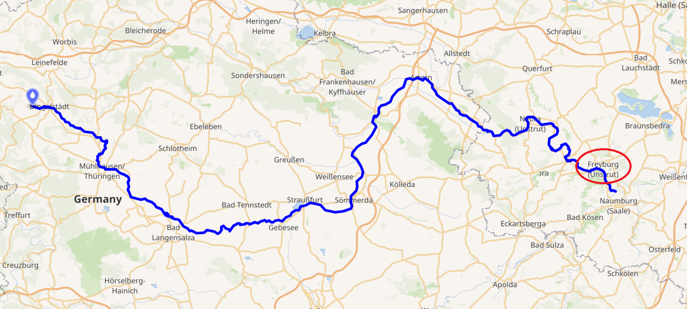
(운스트루트 강의 지도입니다. 튀링겐 분지에서 발원하여 동쪽으로 흐른 뒤 잘러(Saale) 강에 합류하는 지류입니다. 독일이나 프랑스나, 대부분 평탄한 지역이고 곳곳에 강과 천이 흘러 농축산업적으로 풍요로울 수 밖에 없으므로 정말 이런 곳에서는 문명이 꽃필 수 밖에 없다는 생각이 듭니다. 그러나 정작 인류 문명의 발원지는 훨씬 더 열악한 환경이었던 메소포타미아와 이집트였다니 참 아이러니합니다.)
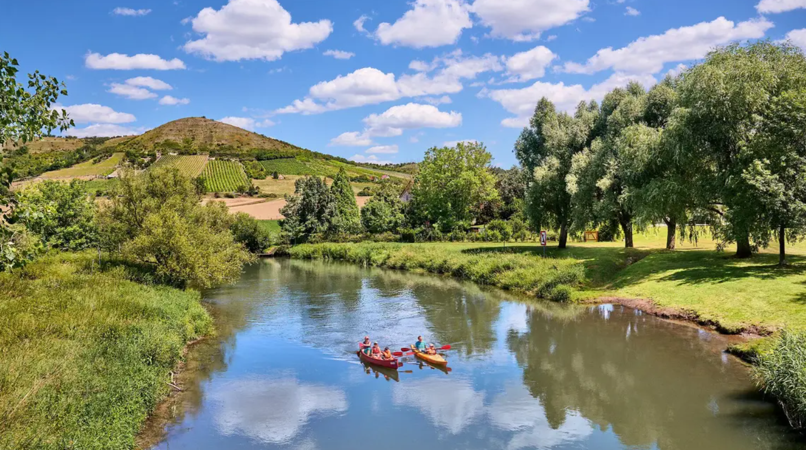
(운스트루트가 잘러 강에 합류하는 지역은 저 사진에서도 보이듯이 유명한 와인 생산지입니다. 이곳의 가장 유명한 와인 브랜드는 Rotkäppchen(붉은 두건)인데, 영어로는 Litte Red Riding Hood, 즉 동화책에서 늑대에게 잡아 먹힐 위기에 처하는 '빨간 모자 소녀'입니다.) 하지만 지나친 집중에 따른 단점이 더 심각했습니다. 프라이부르크 전투 당시 나폴레옹에게 남아 있는 병력은 대략 10만 정도였습니다. 원래 19만 정도였던 병력 중 약 8만을 라이프치히 전투 4일 동안 잃었으니 대략 11만 정도가 남았겠으나, 패배한 뒤 후퇴하는 군대에게 항상 일어나는 탈영과 낙오가 꾸준히 일어나서 불과 2일 만에 1만이 더 줄었던 것입니다. 그런데, 그런 비전투 병력 손실은 시간이 갈수록 눈덩이처럼 불어났습니다. 당시 나폴레옹의 뒤를 추격하던 프로이센군의 장교들이 남긴 기록을 보면, 그랑다르메가 전날 묵었던 야영지에는 어김없이 많은 시체과 환자, 그리고 낙오병들이 즐비했습니다. 환자들 중에는 라이프치히 전투에서의 부상병들도 일부 있었으나, 상당수는 발진 티푸스 환자들이었습니다. 1812년 모스크바에서의 후퇴 당시 추위와 함께 그랑다르메를 괴멸시키다시피 했던 주범인 발진 티푸스가 다시 그들을 덮쳤던 것입니다. 당시 사람들은 아직 티푸스의 원인이 이(louse)라는 것을 전혀 모르고 있었습니다만, 티푸스가 전염병이라는 것은 알고 있었습니다. 프로이센 장교들이 남긴 기록에는 '춥고 궂은 날씨 때문에 나폴레옹의 군대가 병들었는데, 이들은 후퇴하는 경로상의 농촌에도 이 병을 옮겼다'라고 적혀 있습니다. 그나마 다행인 것은 그런 찝찝함 떄문에 연합군은 그랑다르메가 깔고 자던 짚단은 어지간해서는 쓰지 않았고, 덕분에 연합군은 티푸스에 감염되는 일이 상대적으로 더 적었다는 점입니다.
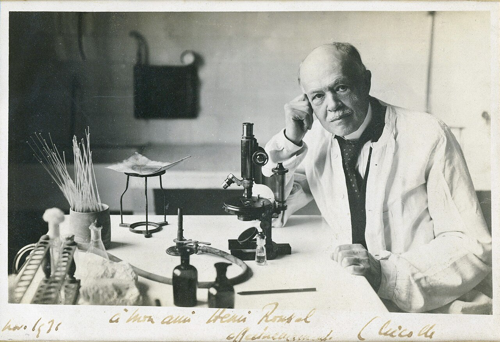
(19세기 내내, 유럽사람들은 병균이라는 존재에 대해 전혀 모르고 있었으며, 티푸스와 같은 전염병은 나쁜 공기(Miasma)로 인해 발생한다고 생각했습니다. 티푸스의 매개체가 이라는 것을 발견한 것은 WW1 발발 고작 5년 전인 1909년, 프랑스 의사인 샤를 니콜(Charles Nicolle)에 의해서였습니다. 그는 튀니지의 파스퇴르 연구소장으로 근무하면서, 병원 밖이나 응급실에서는 환자 주변의 의사, 간호사, 다른 환자들이 끊임없이 티푸스에 감염되지만, 신기하게도 환자가 병동에 입원한 이후에는 감염이 뚝 떨어진다는 것을 알게 되었습니다. 당시 병원에서는 환자가 들어오면 뜨거운 물로 목욕을 시키고 환자복으로 옷을 갈아입혔는데, 그것과 연관이 있을 것이라고 생각한 니콜은 결국 옷솔기 등에 숨어 있던 이가 티푸스를 옮긴다는 것을 밝혀냈습니다. 그의 발견은 WW1에서 많은 병사들의 생명을 구했습니다.) 나폴레옹으로서는 전염병보다 더 무서운 것이 식량 부족이었습니다. 라이프치히를 점거하고 있을 때도 배식을 제대로 못했는데, 이제 도망치는 마당에 식량이 제대로 있을 턱이 없었습니다. 군대의 배식 횟수와 탈영병의 수는 정확하게 반비례하는 법입니다. 아무리 포악한 적군이 무섭고 아무리 황제에 대한 충성심이 강해도, 배가 고픈 것에는 참을 방법이 없었습니다. 실제로 프로이센군의 기록에도 나폴레옹을 추격하는 도중에 벌판을 배회하는 그랑다르메 낙오병들을 많이 볼 수 있었는데, 이들은 무기를 가지고 있지 않았을 뿐만 아니라 마치 정신 나간 사람처럼 보였다고 합니다. 처음에는 이들을 포로로 잡으려던 프로이센군은 시간 낭비일 뿐 누구에게도 도움이 되지 않는다고 보고 이들을 내버려 두었을 뿐만 아니라, 이들의 굶주림을 불쌍히 여긴 병사들이 이들에게 빵조각이나 감자 등을 던져주는 경우도 많았다고 합니다.
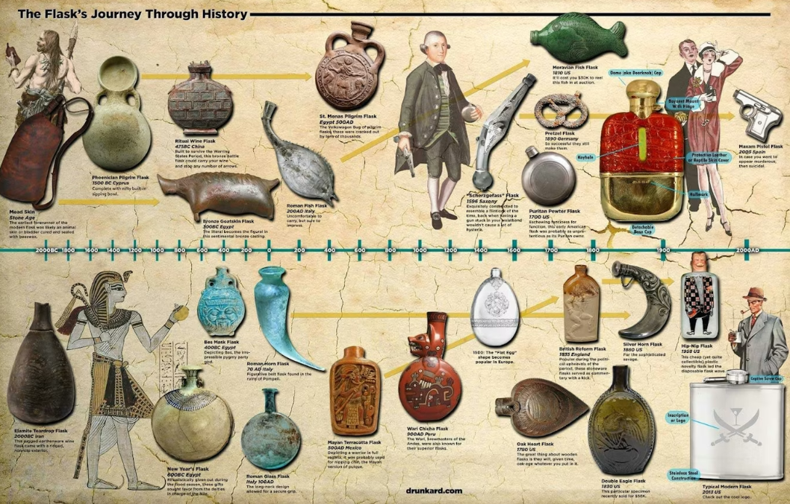
(그런 굶주린 낙오병을 불쌍히 여긴 프로이센군 중 일부는 빵과 함께 브랜디도 주었다고 합니다. 그런데 졸병들이 브랜디를 가지고 다녔을 것 같지는 않고, 아마 장교가 주머니 속에 가지고 다니던 납작한 힙 플라스크(hip flask)에 담아둔 브랜디를 주었을 것 같습니다. 힙 플라스크는 18세기부터 유행했었고, 당시의 형태는 16~17세기의 화약통처럼 납작한 달걀을 납작하게 누른 형태의 주석(정확하게는 백랍(pewter))으로 만든 병이었습니다. 그런 힙 플라스크는 당연히 가격이 꽤 나갔으므로 신사 계급에서나 쓰던 것인데, 당시 영국 해군 선원들은 몰래 술을 군함 내로 들여오기 위해 돼지 방광으로 만든 가죽 주머니 형태의 힙 플라스크를 썼다고 합니다.) 프라이부르크 전투 3일 후인 10월24일, 나폴레옹의 본대는 마침내 에르푸르트(Erfurt)에 도착했는데, 그 사이에 아무 전투가 없었음에도 그 사흘 동안 이미 나폴레옹의 병력은 8만으로 줄어 있었습니다. 마르몽의 회고록에 따르면 그 중 그나마 본대에서 대오를 지키던 것은 6만에 불과했고, 2만 정도의 병사들은 후퇴하는 내내 제멋대로 8~10명 정도의 조를 이루어 주변의 농가들을 약탈하며 다녔습니다. 이길 때든 질 때든 이런 일이 많았던 나폴레옹의 프랑스군에서는 이런 병사들을 부르는 용어가 따로 있어서, 프리코퇴르(fricoteurs, 모리배, 군기를 지키지 않는 약삭빠른 병사)라고 불렸는데, 이들은 에르푸르트에서 다시 재편성을 거쳐야 했습니다.
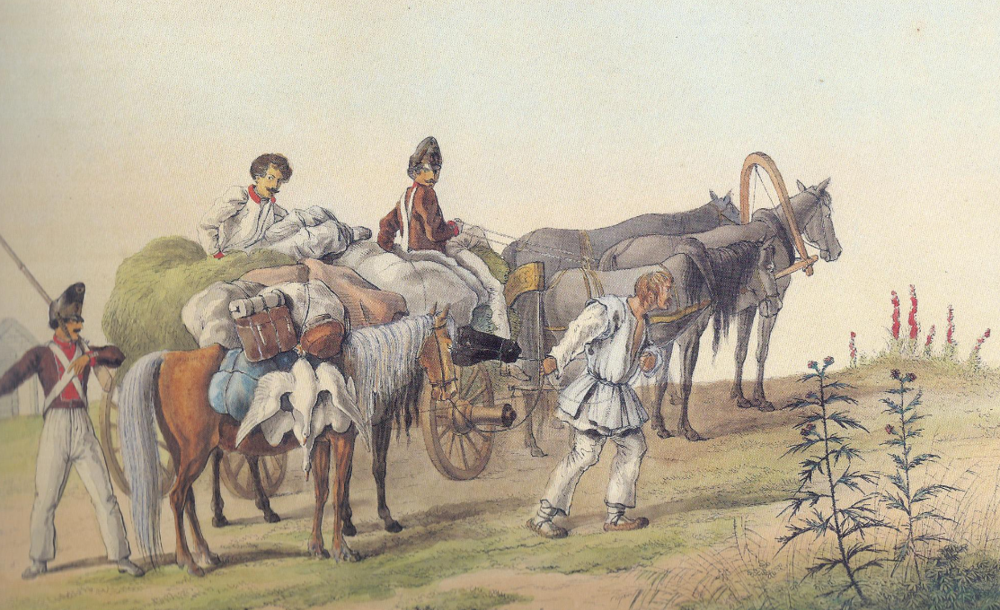
(식량은 현지조달을 원칙으로 삼았던 나폴레옹의 군대에서는 식량조달팀을 푸라죄르(fourrageurs, 영어로도 foragers)라고 불렀는데, 이들은 식량을 구해서 본대로 돌아와 식량을 공유한다는 점에서 자기들끼리 먹어치우는 프리코퇴르(fricoteurs)와는 근본적으로 달랐습니다. 이 그림은 1812년 러시아 원정에서의 프랑스군 푸라죄르들의 모습으로서, 종군화가였던 Faber du Faur의 작품입니다.) 누구의 명령도 듣지 않던 프리코퇴르들이 순순히 에르푸르트로 들어온 이유는 오직 하나, 에르푸르트에는 식량이 있다는 것을 다들 알고 있었기 때문이었습니다. 나폴레옹은 만에 하나라도 위기가 닥칠 때 사용하기 위해 에르푸르트를 프랑스 직할령으로 만들고 여기에 거대한 보급창을 건설하여 식량 뿐만 아니라 무기와 탄약, 군복 등을 집적해두었던 것입니다. 연합군 총사령관 슈바르첸베르크도 당연히 그 사실을 알고 있었고, 그래서 나폴레옹이 에르푸르트에서 군대를 재무장시킨 뒤 여기서 다시 결전을 벌일지 모른다고 생각하여 조심스럽게 접근하고 있었습니다. 그러나 그렇게 조심하던 슈바르첸베르크가 머쓱하게도, 나폴레옹은 거기서 딱 하루만 묵은 뒤 서둘러 에르푸르트에서 철수했습니다. 나폴레옹은 에르푸르트에 알렉상드르 달통(Alexandre d'Alton)의 지휘하에 6천의 병력과 8개월치의 식량을 남겨두어 추격하는 연합군의 심기를 거북하게 만들었습니다. 결국 슈바르첸베르크는 여기에 1개 군단을 남겨 포위하도록 해야 했습니다.

(당시 에르푸르트는 강력한 요새인 페테르스베르크 내성(Petersberg Citadel)을 갖추었을 뿐만 아니라, 도시 전체(구시가지 전체)가 거대한 성벽과 해자로 겹겹이 둘러싸인 전형적인 요새도시(Festungsstadt)였습니다. 위 지도의 왼쪽 상단에 보이듯이 성 외곽에는 치리악스부르크 요새(Cyriaksburg)라는 작은 요새까지 별도로 있었습니다.)
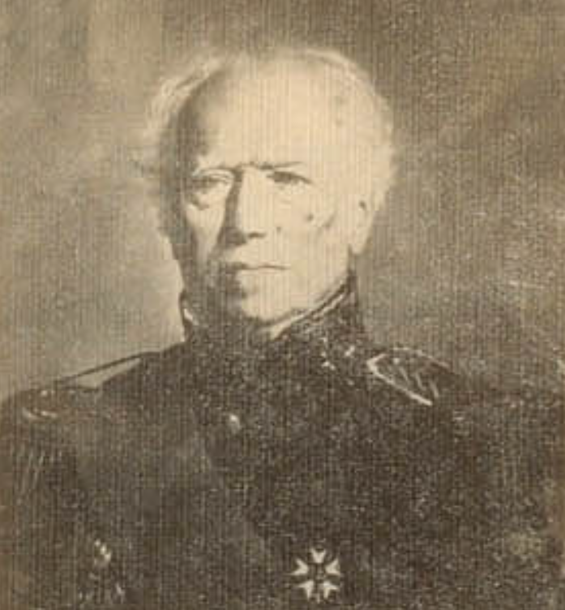
(알렉상드르 달통은 나폴레옹보다 7살 연하로서, 원래 귀족 출신이 아니라 일찌기 프랑스에 정착하여 사업으로 부를 축적한 아일랜드계 부르조아 집안 출신이었습니다. 그는 나폴레옹과는 일찍 연이 닿지는 않아서 마렝고에서도 잘 싸웠으나 카리브해의 생도밍그 식민지로 파병되어 죽을 고비를 많이 넘겼습니다. 그는 아우스테를리츠, 예나, 아일라우 등 주요 전장에 모두 참전했고 1809년에 장군으로 승진했으며, 러시아 원정에도 참전하여 중상을 입기도 했습니다. 그는 에르푸르트 수비대장으로 임명되었을 때 기분이 좋지는 않았을 텐데, 그래도 에르푸르트를 철통처럼 지켜 치열한 포격과 기아, 그리고 티푸스의 창궐 속에서도 꿋꿋이 버텼고, 나폴레옹이 폐위되어 엘바섬을 향했을 때도 그 소식을 듣지 못하고 계속 농성했습니다. 그는 왕정복고가 이루어진 뒤 루이 18세의 정식 철수 명령을 받은 뒤에야 포위군과 협의하여, 전체 수비대와 함께 무기와 군기를 챙겨 든 채 명예로운 퇴각 형식으로 1814년 5월 16일 요새를 나와 프랑스 본토로 귀환했습니다. 그는 부르봉 왕정에서도 보직을 받았으나 나폴레옹의 백일천하 때는 다시 나폴레옹 편에 섰고, 이후 잠시 해직되기도 했으나 결국 다시 복직하여 알제리에서 복무했습니다. 그는 1859년까지, 즉 82세까지 장수하여 이렇게 사진도 남겼습니다.) 에르푸르트에 미련을 두지 않고 라인강을 향한 나폴레옹에겐 이제 두 갈래 길이 기다리고 있었습니다. 위에서도 언급했듯이, 라인강을 코블렌츠(Koblenz) 또는 마인츠(Mainz)에서 건너야 했던 것입니다. 슈바르첸베르크는 나폴레옹이 코블렌츠에서 라인강을 건널 것이라고 확신했고, 그래서 나폴레옹의 뒤를 가장 가까이서 추격하고 있던 블뤼허에게 기센(Gießen) 방향으로 추격 방향을 틀어 코블렌츠로 가라고 명령했습니다. 슈바르첸베르크의 그런 자신감은 대체 어디서 나온 것이었을까요? Source : The Life of Napoleon Bonaparte, by William Milligan Sloane Napoleon and the Struggle for Germany, by Leggiere, Michael V With Napoleon's Guns by Colonel Jean-Nicolas-Auguste Noël https://en.wikipedia.org/wiki/High_Rhine https://en.wikipedia.org/wiki/Bonn https://en.wikipedia.org/wiki/Natural_borders_of_France https://en.wikipedia.org/wiki/Georges_Danton https://en.wikipedia.org/wiki/Charles_Nicolle https://www.scotlandshop.com/us/tartanblog/hip-flask-history https://napoleon1812.wordpress.com/2012/07/06/french-vs-german-foragers/ https://en.wikipedia.org/wiki/Unstrut https://saxony-anhalt-tourism.com/about-saxony-anhalt/regions/saale-unstrut https://en.wikipedia.org/wiki/Petersberg_Citadel https://fr.wikipedia.org/wiki/Alexandre_d%27Alton